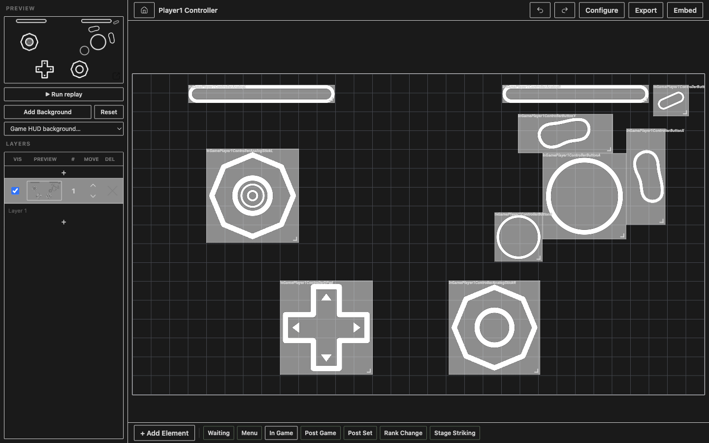
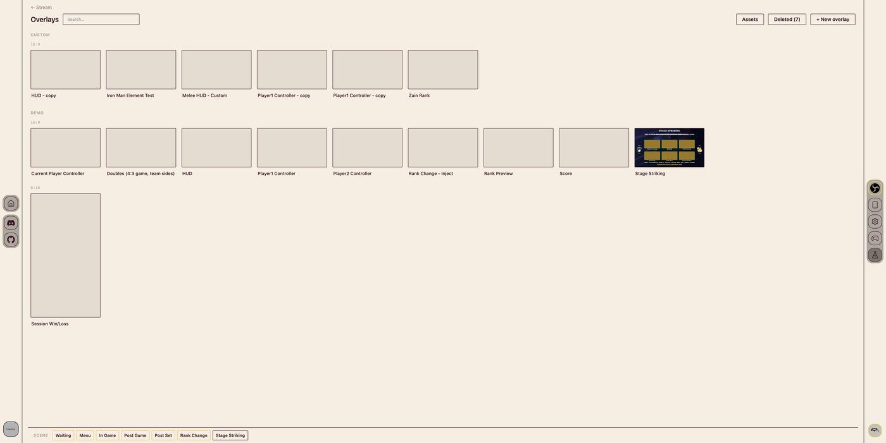
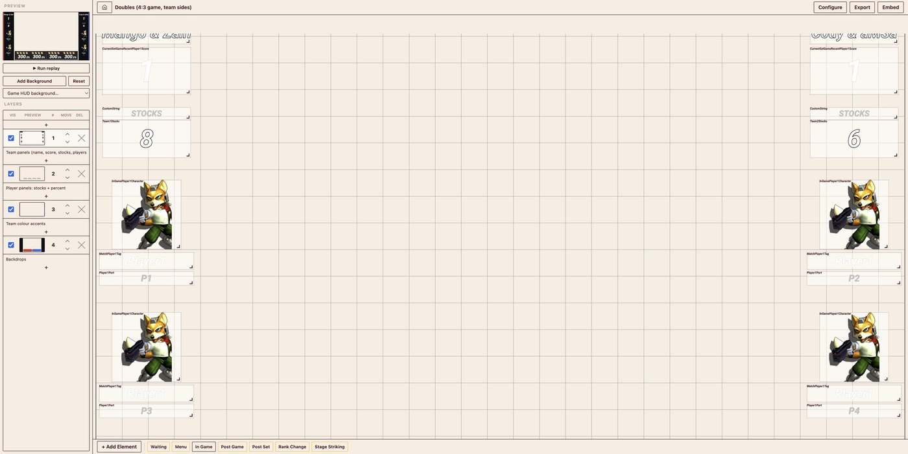
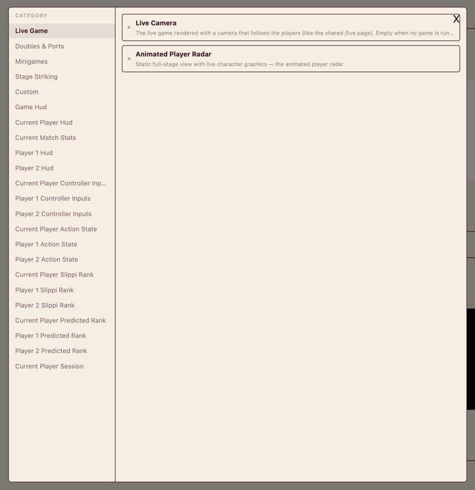

Live overlays
Percent, stocks, rank, win chance and more — build your own or start from a demo.



What you can build
An overlay is a transparent layer on top of your stream (or injected straight into the game window). It reads the game live: percent, stocks, characters, timer, tags, set score, ranks, combos, controller inputs and more.
- A custom HUD — replace Melee's own HUD with your own design
- Stats around the game — names, score, ranks next to a 4:3 game
- Between games — session stats in the menu, post-game and post-set stats
- Stage striking — which stages are struck and whose turn it is
- Doubles — team names, team stocks and all four players
How to set it up
The quickest start
Go to Stream → Overlays. You don't have to start empty: the demo overlays (HUD, Doubles, Stage Striking, ranks, controller inputs) are ready to use — duplicate one and make it yours.

Or let the AI assistant build it: describe what you want — "an Ultimate-style HUD for a 4:3 game window" — and it builds the overlay in Froggi and shows you a preview. More on the last pages.
Scenes
An overlay has one scene per game state, and Froggi switches between them by itself:
- Waiting — Dolphin isn't connected
- Menu — between games
- In Game — a game is running
- Post Game / Post Set — after a game, after the set is won
- Rank Change — after a ranked game
- Stage Striking — while players strike stages for a set
Pick a scene with the buttons at the bottom of the editor. Configure (top right) sets the title, aspect ratio, font, background and how scenes animate in and out.
Ask yourself first where the overlay goes: on the stream canvas (usually 16:9), or the game window itself (4:3) — that decides the aspect ratio.
Layers and elements

- + Add Element → pick a category and an element (percent, stock icons, character, tag, timer, text, box, image…).
- Drag and resize it on the canvas.
- Layers stack on top of each other — layer 1 is drawn on top. Give layers a name so you find things later.
- Select an element to style it: font, colours, stroke, shadow, image fit.

Doubles: every Player 1 / Player 2 element has a Player option to show any of the four players.
Make it react
This is what makes an overlay feel like part of the game:
- Visibility conditions — show an element only when something is true: the 4th stock icon while a player has 4 stocks, "GAME!" when the game ends, the pause screen while paused, a radar when a player is off stage.
- Animations — how an element appears and disappears (fade, fly, scale), and animation triggers that replay an animation on an event, like a flash when a stock is lost.
The editor shows every element with placeholder data, conditions ignored. To see the real thing, press ▶ Run replay: Froggi plays back your latest replay through the overlay.